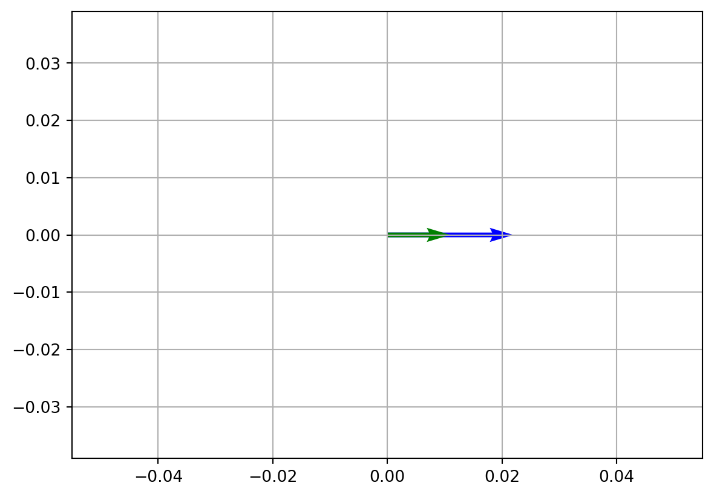

import numpy as np
from scipy.linalg import null_space
from sympy import Matrix
import matplotlib.pyplot as pltIntroduction
This is the fifth post in the blog series about linear algebra, covering advanced vector and matrix operations.
- Introduction to Linear Algebra with Python
- Basic Linear Algebra with Python
- Intermediate linear algebra
- Advanced linear algebra
- Advance Linear Algebra with Python - Part I
- Advance Linear Algebra with Python - Part II
In this post I start with introducing advanced parts of the vector operations and then continue with advanced matrix operations.
Vector
Basis Vectors
In the basics, we saw what is a unit vector. To refresh, the unit vector is the vector with length 1 and the formula is
\[ \hat{X} = \frac{X}{\|X\|} \]
For farther explanation, unit vectors can be used to represent the axes of a Cartesian coordinate system. For example in a three-dimensional Cartesian coordinate system such vectors are:
\[ \hat{i} = \begin{bmatrix} 1 \\ 0 \\ 0 \end{bmatrix} \quad \hat{j} = \begin{bmatrix} 0 \\ 1 \\ 0 \end{bmatrix} \quad \hat{k} = \begin{bmatrix} 0 \\ 0 \\ 1 \end{bmatrix} \]
which represents, \(x\), \(y\), and \(z\) axes, respectively. For two dimensional space we have
\[ \hat{i} = \begin{bmatrix} 1 \\ 0 \end{bmatrix} \quad \hat{j} = \begin{bmatrix} 0 \\ 1 \end{bmatrix} \]
Let deal with two-dimensional space to catch the idea of basis easily and then generalize this idea for higher dimensions. Imagine, we have vector space or collection of vectors \(\vec{V}\) over the Cartesian coordinate system. This space includes all two-dimensional vectors, or in other words, vectors with only two elements, \(x\), and \(y\).
A basis, call it \(B\), of vector space \(V\) over the Cartesian coordinate system is a linearly independent subset of \(V\) that spans whole vector space \(V\). To be precise, basis \(B\) to be the basis it must satisfy two conditions:
Linearly independence property - states that all vectors in \(B\) are linearly independent
The spanning property - states that \(B\) spans whole \(V\)
We can combine these two conditions in one sentence. \(B\) is the basis if its all elements are linearly independent and every element of \(V\) is a linear combination of elements of \(B\).
From these conditions, we can conclude that unit vectors \(\hat{i}\) and \(\hat{j}\) are the basis of \(\mathbb{R^2}\). This kind of bases are also called standard basis or natural basis. The standard basis are denoted by \(e_{1}\), \(e_{2}\), \(e_{3}\) and so on. I will be consistent and use the later notation for standard basis and \(\hat{i}\), \(\hat{j}\) and \(\hat{k}\) for unit vectors.
These standard basis vectors are the basis in the sense that any other vector in \(V\) can be expressed uniquely as a linear combination of these unit vectors. For example, every vector \(v\) in two-dimensional space can be written as
\[ x\ e_{1} + y\ e_{2} \]
where \(e_{1}\) and \(e_{2}\) are unit vectors and \(x\) and \(y\) are scalar components or elements of the vector \(v\).
Now, to generalize the idea for higher dimensions we just have to apply the same logic as above, for \(\mathbb{R^3}\) and more. In \(\mathbb{R^3}\) we have standard basis vectors \(e_{1}\), \(e_{2}\), \(e_{3}\), and generally for \(\mathbb{R^n}\) we have standard basis vector space
\[ E = \begin{bmatrix} e_{1} \\ e_{2} \\ \cdots \\ e_{n} \end{bmatrix} \]
To generalize the definition of the basis further, let consider the following:
If elements \(\{v_{1}, v_{2},\cdots,v_{n}\}\) of \(V\) generate \(V\) and in addition they are linearly independent, then \(\{v_{1}, v_{2},\cdots,v_{n}\}\) is called a basis of \(V\). We shall say that the elements \(v_{1}, v_{2},\cdots,v_{n}\) constitute or form a basis of V. Vector space \(V\) can have several basis.
At this stage, the notion of basis seems very abstract even for me, and believe me it was totally unclear for me until I solved some examples by hand. I’ll show you how to compute basis after explaining row-echelon and reduced row-echelon forms and you’ll understand it. However, it’s not enough only to know how to row-reduce the given matrix. It’s necessary to know which basis you want. Either column space or row space basis or the basis for nullspace. These notions are explained below and after that, we can find the basis for each of them.
Matrix
Gaussian Elimination of a Matrix
In linear algebra, Gaussian Elimination is the method to solve the system of linear equations. This method is the sequence of operations performed on the coefficient matrix of the system. Except for solving the linear systems, the method can be used to find the rank of a matrix, the determinant as well as the inverse of a square invertible matrix.
And what is the sequence of operations?
Under this notion, elementary row operations are meant. We’ve covered it in the previous post but for the refresher, ERO’s are:
Interchange rows
Multiply each element in a row by a non-zero number
Multiply a row by a non-zero number and add the result to another row
Performing Gaussian elimination results in the matrix in Row Echelon Form. The matrix is said to be in row echelon form if it satisfies the following conditions:
The first non-zero element in each row, called the leading entry, is a 1
Each leading entry is in a column, which is the right side of the leading entry in the previous row
Below the leading entry in a column, all other entries are zero
To catch the idea of this process, let consider the example. Actually, we have no matrix (not necessarily true), we have the system of linear equations in the following form:
\[ \begin{cases} x + 2y - z = 5\\ 3x + y - 2z = 9\\ -x + 4y + 2z = 0 \end{cases} \]
Based on these equations we can form the following matrix
\[ \begin{bmatrix} 1 & 2 & -1 \\ 3 & 1 & -2 \\ -1 & 4 & 2 \end{bmatrix} \]
This matrix is called coefficient matrix as it contains the coefficients of the linear equations. Having the coefficient matrix, we can rewrite our system in the following form:
\[ Ax = b \]
Where \(A\) is the coefficient matrix, \(x\) is the vector of the unknowns, and \(b\) is the vector of the right-hand side components
To solve this simultaneous system, the coefficients matrix is not enough. We need something more, on which we can perform ELO’s. This matrix is:
\[ \begin{bmatrix} 1 & 2 & -1 & |& 5 \\ 3 & 1 & -2 & |& 9 \\ -1 & 4 & 2 & |& 0 \end{bmatrix} = [A | b] \]
which is called augmented matrix, which in turn gives us the possibility to perform ELO’s, in other words, we do Gaussian elimination and the resulted matrix will be in row echelon form. Using back substitution on the resulted matrix gives the solution to our system of equations.
Let do it by hand. We have the initial system
\[ \begin{bmatrix} 1 & 2 & -1 & |& 5 \\ 3 & 1 & -2 & |& 9 \\ -1 & 4 & 2 & |& 0 \end{bmatrix} \equiv \begin{cases} x + 2y - z = 5 \\ 3x + y - 2z = 9 \\ -x + 4y + 2z = 0 \end{cases} \]
Then, using ERO’s
- \(R3 \rightarrow R3 + R1\)
\[ \begin{bmatrix} 1 & 2 & -1 & |& 5 \\ 3 & 1 & -2 & |& 9 \\ 0 & 6 & 1 & |& 5 \end{bmatrix} \equiv \begin{cases} x + 2y - z = 5 \\ 3x + y - 2z = 9 \\ 6y + z = 5 \end{cases} \]
- \(R2 \rightarrow R2 - 3R1\)
\[ \begin{bmatrix} 1 & 2 & -1 & |& 5 \\ 0 & -5 & 1 & |& -6 \\ 0 & 6 & 1 & |& 5 \end{bmatrix} \equiv \begin{cases} x + 2y - z = 5 \\ -5y + z = -6 \\ 6y + z = 5 \end{cases} \]
- \(R2 \rightarrow R2 + R3\)
\[ \begin{bmatrix} 1 & 2 & -1 & |& 5 \\ 0 & 1 & 2 & |& -1 \\ 0 & 6 & 1 & |& 5 \end{bmatrix} \equiv \begin{cases} x + 2y - z = 5 \\ y + 2z = -1 \\ 6y + z = 5 \end{cases} \]
- \(R3 \rightarrow R3 - 6R2\)
\[ \begin{bmatrix} 1 & 2 & -1 & |& 5 \\ 0 & 1 & 2 & |& -1 \\ 0 & 0 & -11 & |& 11 \end{bmatrix} \equiv \begin{cases} x + 2y - z = 5 \\ y + 2z = -1 \\ -11z = 11 \end{cases} \]
- \(R3 \rightarrow R3 \cdot -\frac{1}{11}\)
\[ \begin{bmatrix} 1 & 2 & -1 & |& 5 \\ 0 & 1 & 2 & |& -1 \\ 0 & 0 & 1 & |& -1 \end{bmatrix} \equiv \begin{cases} x + 2y - z = 5 \quad (A)\\ y + 2z = -1 \quad (B)\\ z = -1 \quad (C) \end{cases} \]
- Back substitution
\[ \begin{cases} (C) \quad z = -1 \\ (B) \quad y = -1 - 2z \quad \Rightarrow \quad y = -1 - 2(-1) = 1 \\ (A) \quad x = 5 - 2y + z \quad \Rightarrow \quad x = 5 - 2(1) + (-1) = 2 \end{cases} \]
- Solution
\[ x = 2 \\ y = 1 \\ x = -1 \]
This is the solution of the initial system, as well as the last system and every intermediate system. The matrix obtained in step 5 above is in Row-Echelon form as it satisfied above-mentioned conditions.
Note that, starting with a particular matrix, a different sequence of ERO’s can lead to different row echelon form
Gauss-Jordan Elimination of a Matrix
Gaussian elimination performs row operations to produce zeros below the main diagonal of the coefficient matrix to reduce it to row echelon form. Once it’s done we perform back substitution to find the solution. However, we can continue performing ERO’s to reduce coefficient matrix farther, to produce Reduced Row Echelon Form. The matrix is in reduced row echelon form if it satisfies the following conditions:
It is in row echelon form
The leading entry in each row is the only non-zero entry in its column
Gauss-Jordan elimination starts when Gauss elimination left off. Loosely speaking, Gaussian elimination works from the top down and when it stops, we start Gauss-Jordan elimination from the bottom up. The Reduced Row Echelon Form matrix is the result of Gauss-Jordan Elimination process.
We can continue our example from step 5 and see what is Gauss-Jordan elimination. At step 5 we had
- \(R3 \rightarrow R3 \cdot -\frac{1}{11}\)
\[ \begin{bmatrix} 1 & 2 & -1 & |& 5 \\ 0 & 1 & 2 & |& -1 \\ 0 & 0 & 1 & |& -1 \end{bmatrix} \equiv \begin{cases} x + 2y - z = 5 \\ y + 2z = -1 \\ z = -1 \end{cases} \]
Now, from bottom to up we perform the following ERO’s
- \(R2 \rightarrow R2 - 2R3\)
\[ \begin{bmatrix} 1 & 2 & -1 & |& 5 \\ 0 & 1 & 0 & |& 1 \\ 0 & 0 & 1 & |& -1 \end{bmatrix} \equiv \begin{cases} x + 2y - z = 5 \\ y = 1 \\ z = -1 \end{cases} \]
- \(R1 \rightarrow R1 + R3\)
\[ \begin{bmatrix} 1 & 2 & 0 & |& 4 \\ 0 & 1 & 0 & |& 1 \\ 0 & 0 & 1 & |& -1 \end{bmatrix} \equiv \begin{cases} x + 2y = 4 \\ y = 1 \\ z = -1 \end{cases} \]
- \(R1 \rightarrow R1 - 2R2\)
\[ \begin{bmatrix} 1 & 0 & 0 & |& 2 \\ 0 & 1 & 0 & |& 1 \\ 0 & 0 & 1 & |& -1 \end{bmatrix} \equiv \begin{cases} x = 2 \\ y = 1 \\ z = -1 \end{cases} \]
The solution is
\[ x = 2 \\ y = 1 \\ x = -1 \]
and this is the same as the solution of the Gauss elimination. The matrix in step 8 is the Reduced Row Echelon Form of our initial coefficient matrix \(A\).
The Inverse of a Matrix Using Gauss-Jordan Elimination
Suppose, we have given the matrix and want to find its inverse but do not want to use the technique mentioned in the intermediate post. We can use Gauss-Jordan elimination with little modification to find the inverse of a matrix. To be consistent, I use the above coefficient matrix but not the right-hand side of the system. So, our matrix is
\[ A = \begin{bmatrix} 1 & 2 & -1 \\ 3 & 1 & -2 \\ -1 & 4 & 2 \end{bmatrix} \]
To find the inverse of \(A\), we need to augment \(A\) by the identity matrix \(I\) which has the same dimensions as \(A\). It is a must the identity to have the same dimensions. After augmentation we have
\[ [A | I] = \begin{bmatrix} 1 & 2 & -1 & |& 1 & 0 & 0 \\ 3 & 1 & -2 & |& 0 & 1 & 0 \\ -1 & 4 & 2 & |& 0 & 0 & 1 \end{bmatrix} \]
We have to perform elementary row operations in the same way as we did in the above example. Particularly,
- \(R3 \rightarrow R3 + R1\)
\[ \begin{bmatrix} 1 & 2 & -1 & |& 1 & 0 & 0\\ 3 & 1 & -2 & |& 0 & 1 & 0\\ 0 & 6 & 1 & |& 1 & 0 & 1 \end{bmatrix} \]
- \(R2 \rightarrow R2 - 3R1\)
\[ \begin{bmatrix} 1 & 2 & -1 & |& 1 & 0 & 0\\ 0 & -5 & 1 & |& -3 & 1 & -3\\ 0 & 6 & 1 & |& 1 & 0 & 1 \end{bmatrix} \]
- \(R2 \rightarrow R2 + R3\)
\[ \begin{bmatrix} 1 & 2 & -1 & |& 1 & 0 & 0\\ 0 & 1 & 2 & |& -2 & 1 & -2\\ 0 & 6 & 1 & |& 1 & 0 & 1 \end{bmatrix} \]
- \(R3 \rightarrow R3 - 6R2\)
\[ \begin{bmatrix} 1 & 2 & -1 & |& 1 & 0 & 0\\ 0 & 1 & 2 & |& -2 & 1 & -2\\ 0 & 0 & -11 & |& 13 & -6 & 13 \end{bmatrix} \]
- \(R3 \rightarrow R3 \cdot -\frac{1}{11}\)
\[ \begin{bmatrix} 1 & 2 & -1 & |& 1 & 0 & 0\\ 0 & 1 & 2 & |& -2 & 1 & -2\\ 0 & 0 & 1 & |& -\frac{13}{11} & \frac{6}{11} & -\frac{13}{11} \end{bmatrix} \]
- \(R2 \rightarrow R2 - 2R3\)
\[ \begin{bmatrix} 1 & 2 & -1 & |& 1 & 0 & 0\\ 0 & 1 & 0 & |& \frac{4}{11} & -\frac{9}{100} & \frac{4}{11}\\ 0 & 0 & 1 & |& -\frac{13}{11} & \frac{6}{11} & -\frac{13}{11} \end{bmatrix} \]
- \(R1 \rightarrow R1 + R3\)
\[ \begin{bmatrix} 1 & 2 & 0 & |& -\frac{2}{11} & \frac{6}{11} & -\frac{13}{11}\\ 0 & 1 & 0 & |& \frac{4}{11} & -\frac{9}{100} & \frac{4}{11}\\ 0 & 0 & 1 & |& -\frac{13}{11} & \frac{6}{11} & -\frac{13}{11} \end{bmatrix} \]
- \(R1 \rightarrow R1 - 2R2\)
\[ \begin{bmatrix} 1 & 0 & 0 & |& -\frac{10}{11} & \frac{18}{25} & -\frac{21}{11}\\ 0 & 1 & 0 & |& \frac{4}{11} & -\frac{9}{100} & \frac{4}{11}\\ 0 & 0 & 1 & |& -\frac{13}{11} & \frac{6}{11} & -\frac{13}{11} \end{bmatrix} \]
Our inverse of \(A\) is
\[ A^{-1} = \begin{bmatrix} -\frac{10}{11} & \frac{18}{25} & -\frac{21}{11}\\ \frac{4}{11} & -\frac{9}{100} & \frac{4}{11}\\ -\frac{13}{11} & \frac{6}{11} & -\frac{13}{11} \end{bmatrix} \]
Image of a Matrix
Let \(A\) be \(m\times n\) matrix. Space spanned by its column vectors are called range, image, or column space of a matrix \(A\). The row space is defined similarly. I only consider column space as all the logic is the same for row space.
The precise definition is the following:
Let \(A\) be an \(m\times n\) matrix, with column vectors \(v_{1}, v_{2}, \cdots, v_{n}\). A linear combination of these vectors is any vector of the following form: \(c_{1}v_{1} + c_{2}v_{2} + \cdots + c_{n}v_{n}\), where \(c_{1}, c_{2}, \cdots , c_{n}\) are scalars. The set of all possible linear combinations of \(v_{1}, v_{2}, \cdots , v_{n}\) is called the column space of \(A\).
For example:
\[ A = \begin{bmatrix} 1 & 0\\ 0 & 1\\ 2 & 0 \end{bmatrix} \]
Column vectors are:
\[ v_{1} = \begin{bmatrix} 1\\ 0\\ 2 \end{bmatrix} \quad v_{2} = \begin{bmatrix} 0\\ 1\\ 0 \end{bmatrix} \]
A linear combination of \(v_{1}\) and \(v_{2}\) is any vector of the form
\[ c_{1} \begin{bmatrix} 1\\ 0\\ 2 \end{bmatrix} + c_{2} \begin{bmatrix} 0\\ 1\\ 0 \end{bmatrix} = \begin{bmatrix} c_{1}\\ c_{2}\\ 2c_{1} \end{bmatrix} \]
The set of all such vectors is the column space of \(A\).
Kernel of a Matrix
In linear algebra, the kernel or a.k.a null space is the solution of the following homogeneous system:
\[A\cdot X = 0\]
where \(A\) is a \(m\times n\) matrix and \(X\) is a \(m\times 1\) vector and is denoted by \(Ker(A)\).
For more clarity, let consider the numerical example. Lat our matrix \(A\) be the following:
\[ A = \begin{bmatrix} 2 & 7 & 1 & 3 \\ -4 & -2 & 2 & -2 \\ -1 & 7 & 3 & 2 \\ -2 & 2 & 2 & 0 \\ \end{bmatrix} \]
and our \(X\) is
\[ X = \begin{bmatrix} x_{1} \\ x_{2} \\ x_{3} \\ x_{4} \\ \end{bmatrix} \]
We have to form the following system:
\[ A\cdot X = \begin{bmatrix} 2 & 7 & 1 & 3 \\ -4 & -2 & 2 & -2 \\ -1 & 7 & 3 & 2 \\ -2 & 2 & 2 & 0 \\ \end{bmatrix} \cdot \begin{bmatrix} x_{1} \\ x_{2} \\ x_{3} \\ x_{4} \\ \end{bmatrix} = \begin{bmatrix} 0 \\ 0 \\ 0 \\ 0 \\ \end{bmatrix} \]
After that, we have to put this system into row-echelon or reduced row-echelon form. Let skip detailed calculation and present only results, which is the last matrix.
\[ A = \begin{bmatrix} 2 & 7 & 1 & 3\\ -4 & -2 & 2 & -2\\ -1 & 7 & 3 & 2\\ -2 & 2 & 2 & 0 \end{bmatrix} \rightarrow \begin{bmatrix} -1 & 7 & 3 & 2\\ -4 & -2 & 2 & -2\\ 2 & 7 & 1 & 3\\ -2 & 2 & 2 & 0 \end{bmatrix} \rightarrow \begin{bmatrix} -1 & 7 & 3 & 2\\ 0 & -30 & -10 & -10\\ 0 & 21 & 7 & 7\\ 0 & -12 & -4 & -4 \end{bmatrix} \] \[ \rightarrow \begin{bmatrix} -1 & 7 & 3 & 2\\ 0 & 3 & 1 & 1\\ 0 & 3 & 1 & 1\\ 0 & 3 & 1 & 1 \end{bmatrix} \rightarrow \begin{bmatrix} -1 & 7 & 3 & 2\\ 0 & 3 & 1 & 1\\ 0 & 0 & 0 & 0\\ 0 & 0 & 0 & 0 \end{bmatrix} \]
Now, to find the kernel of the original matrix \(A\), we have to solve the following system of equations:
\[ \begin{cases} x_{1} - 7x_{2} - 3x_{3} - 2x_{4} = 0 \\ 3x_{2} + x_{3} + x_{4} = 0 \end{cases} \rightarrow \begin{cases} x_{1} = \frac{2}{3}x_{3} - \frac{1}{3}x_{4}\\ x_{2} = -\frac{1}{3}x_{3} - \frac{1}{3}x_{4} \end{cases} \]
From this solution we conclude that the kernel of \(A\) is
\[ Ker(A) = \begin{bmatrix} x_{1} = \frac{2}{3}x_{3} - \frac{1}{3}x_{4} \\ x_{2} = -\frac{1}{3}x_{3} - \frac{1}{3}x_{4} \\ x_{3} \\ x_{4} \end{bmatrix} \]
Where, \(x_{3}\) and \(x_{4}\) are free variables and can be any number in \(R\)
Note, that both original matrix \(A\) and its row-echelon for has the same kernel. This means that row reduction preserves the kernel or null space.
A = np.array([[2, 7, 1, 3], [-4, -2, 2, -2], [-1, 7, 3, 2], [-2, 2, 2, 0]])
# This matrix is normalized, meaning that it has unit length
kernel_A = null_space(A)
print("Normalized Kernel", kernel_A, sep="\n")
# To find unnormalized kernel we have to do the following:
B = Matrix([[2, 7, 1, 3], [-4, -2, 2, -2], [-1, 7, 3, 2], [-2, 2, 2, 0]])
kernel_B = B.nullspace()
print("Unnormalized Kernel", kernel_B[0], sep="\n")
# In unnormilized case, we clearly see that Sympy automatically choose values for our free variables.
# In first case x_3 = 1; x_4 = 0 and in the second case x_3 = 0; x_4 = 1
# Resulted vector(s) are basis for the null space for our matrix ANormalized Kernel
[[-0.58983053 0.07100086]
[ 0.14709576 0.39348879]
[-0.73692629 -0.32248793]
[ 0.29563901 -0.85797843]]
Unnormalized Kernel
Matrix([[2/3], [-1/3], [1], [0]])Rank of a Matrix
In the intermediate tutorial, you saw how to calculate the determinant of a matrix and also saw that any non zero determinant of sub-matrix of the original matrix shows its non-degenerateness. In other words, nonzero determinant gives us information about the rank of the matrix. Also, I said that there was not only one way to find the rank of a matrix. After reviewing Gauss and Gauss-Jordan Elimination and Row-Echelon and Reduced Row-Echelon forms you know that indeed there are other ways to find the determinant of a matrix as well as the rank of the matrix. To keep DRY, here I only consider a numerical example. The code is provided in the intermediate tutorial.
Suppose we have matrix \(A\) in the following form:
\[ A = \begin{bmatrix} 3 & 2 & -1\\ 2 & -3 & -5\\ -1 & -4 &- 3 \end{bmatrix} \]
Perform Elementary Row Operations we get reduced-echelon form:
\[ A = \begin{bmatrix} 3 & 2 & -1\\ 2 & -3 & -5\\ -1 & -4 & -3 \end{bmatrix} \rightarrow \begin{bmatrix} 1 & 4 & 3\\ 3 & 2 & -1\\ 2 & -3 & -5 \end{bmatrix} \rightarrow \begin{bmatrix} 1 & 4 & 3\\ 0 & -10 & -10\\ 0 & -11 & -11 \end{bmatrix} \] \[ \rightarrow \begin{bmatrix} 1 & 4 & 3\\ 0 & 1 & 1\\ 0 & -11 & -11 \end{bmatrix} \rightarrow \begin{bmatrix} 1 & 4 & 3\\ 0 & 1 & 1\\ 0 & 0 & 0 \end{bmatrix} \]
From the last matrix we see that the nonzero determinant only exists in \(2\times2\) sub-matrices, hence rank of the matrix \(A\) is 2.
Find the Basis of a Matrix
Now we are able to find the basis for column space and row space as well as the basis for the kernel. The columns of a matrix \(A\) span the column space but they may not form a basis if the column vectors are linearly dependent. If this is the case, only some subset of these vectors forms the basis. To find the basis for column space we reduce matrix \(A\) to reduced row-echelon form.
For example:
\[ A = \begin{bmatrix} 2 & 7 & 1 & 3 \\ -4 & -2 & 2 & -2 \\ -1 & 7 & 3 & 2 \\ -2 & 2 & 2 & 0 \\ \end{bmatrix} \]
Row reduced form of \(A\) is:
\[ B = \begin{bmatrix} -1 & 7 & 3 & 2\\ 0 & 3 & 1 & 1\\ 0 & 0 & 0 & 0\\ 0 & 0 & 0 & 0 \end{bmatrix} \]
We see that only column 1 and column 2 are linearly independent in reduced form and hence column 1 and column 2 of the original matrix \(A\) form the basis, which is:
\[ \begin{bmatrix} 2 \\-4\\-1\\-2 \end{bmatrix} \quad \text{and} \quad \begin{bmatrix} 7\\-2 \\ 7 \\ 2 \end{bmatrix} \]
To find the basis for row space, let consider different matrix and again let it be \(A\).
\[ A = \begin{bmatrix} 1 & 3 & 2 \\ 2 & 7 & 4 \\ 1 & 5 & 2 \end{bmatrix} \]
To reduce \(A\) to reduced row-echelon form we have:
\[ B = \begin{bmatrix} 1 & 0 & 2 \\ 0 & 1 & 0 \\ 0 & 0 & 0 \end{bmatrix} \]
As in column space case, we see that linearly independent, nonzero row vectors are
\[ \begin{bmatrix} 1 \\0\\2 \end{bmatrix} \quad \text{and} \quad \begin{bmatrix} 0\\1 \\ 0 \end{bmatrix} \]
To find the basis for kernel let consider our old example. In this case our matrix is:
\[ A = \begin{bmatrix} 2 & 7 & 1 & 3 \\ -4 & -2 & 2 & -2 \\ -1 & 7 & 3 & 2 \\ -2 & 2 & 2 & 0 \\ \end{bmatrix} \]
And its row reduced form is
\[ B = \begin{bmatrix} -1 & 7 & 3 & 2\\ 0 & 3 & 1 & 1\\ 0 & 0 & 0 & 0\\ 0 & 0 & 0 & 0 \end{bmatrix} \]
We solved this and got the following result:
\[ Ker(A) = \begin{bmatrix} x_{1} = \frac{2}{3}x_{3} - \frac{1}{3}x_{4} \\ x_{2} = -\frac{1}{3}x_{3} - \frac{1}{3}x_{4} \\ x_{3} \\ x_{4} \end{bmatrix} \]
Now to have basis for null space just plug values for \(x_{3} = 1\) and \(x_{4} = 0\), resulted vector is
\[ \begin{bmatrix} \frac{2}{3} \\ -\frac{1}{3} \\ 1 \\ 0 \end{bmatrix} \]
The resulted vector is one set of the basis for kernel space. The values for \(x_{3}\) and \(x_{4}\) are up to you as they are free variables.
Transformations
Matrices and vectors are used together to manipulate spatial dimensions. This has a lot of applications, including the mathematical generation of 3D computer graphics, geometric modeling, and the training and optimization of machine learning algorithms. Here, I present some types of transformation. However, the list will not be exhaustive. Firstly, define linear transformation:
Linear transformation or linear map, is a mapping (function) between two vector spaces that preserves addition and scalar multiplication operations
Linear Transformation
You can manipulate a vector by multiplying it with a matrix. The matrix acts like a function that operates on an input vector to produce a vector output. Specifically, matrix multiplications of vectors are linear transformations that transform the input vector into the output vector.
For example, consider a matrix \(A\) and vector \(v\)
\[ A = \begin{bmatrix} 2 & 3 \\ 5 & 2 \end{bmatrix} \quad \vec{v} = \begin{bmatrix} 1 \\ 2 \end{bmatrix} \]
Define transformation \(T\) to be:
\[ T(\vec{v}) = A \vec{v} \]
This transformation is simply dot or inner product and give the following result:
\[ T(\vec{v}) = A \vec{v} = \begin{bmatrix} 8 \\ 9 \end{bmatrix} \]
In this case, both the input and output vector has 2 components. In other words, the transformation takes a 2-dimensional vector and produces a new 2-dimensional vector. Formally we can write this in the following way:
\[ T: \rm I\!R^{2} \to \rm I\!R^{2} \]
The transformation does not necessarily have to be \(n \times n\). The dimension of the output vector and the input vector may differ. Rewrite our matrix \(A\) and vector \(v\).
\[ A = \begin{bmatrix} 2 & 3 \\ 5 & 2 \\ 1 & 1 \end{bmatrix} \quad \vec{v} = \begin{bmatrix} 1 \\ 2 \end{bmatrix} \]
Apply above transformation gives,
\[ T(\vec{v}) = A \vec{v} = \begin{bmatrix} 8 \\ 9 \\ 3 \end{bmatrix} \]
Now, our transformation transforms a vector from 2-dimensional space into 3-dimensional space. We can rite this transformation as
\[ T: \rm I\!R^{2} \to \rm I\!R^{3} \]
Transformations of Magnitude and Amplitude
When we multiply a vector by a matrix we transform it in at least one of the following two ways
Scale the length (Magnitude)
Change the direction (Amplitude)
Change in length (Magnitude), but not change in direction (Amplitude)
\[ A = \begin{bmatrix} 2 & 0 \\ 0 & 2 \end{bmatrix} \quad \vec{v} = \begin{bmatrix} 1 \\ 0 \end{bmatrix} \]
transformation gives,
\[ T(\vec{v}) = A \vec{v} = \begin{bmatrix} 2 \\ 0 \end{bmatrix} \]
In this case, the resulted vector changed in length but not changed in direction.
v = np.array([1, 0])
A = np.array([[2, 0], [0, 2]])
t = np.dot(A, v)
print("Resulted vector is: t = ", t)
# Original vector v is green and transformed vector t is blue.
# Vector t has same direction as v but greater magnitude
vecs = np.array([t, v])
plt.axis("equal")
plt.grid()
plt.quiver(0, 0, *t, color=["blue"], scale=10)
plt.quiver(0, 0, *v, color=["green"], scale=10)
plt.show()Resulted vector is: t = [2 0]
Change in direction (Amplitude), but not change in length (Magnitude)
\[ A = \begin{bmatrix} 0 & -1 \\ 1 & 0 \end{bmatrix} \quad \vec{v} = \begin{bmatrix} 1 \\ 0 \end{bmatrix} \]
transformation gives,
\[ T(\vec{v}) = A \vec{v} = \begin{bmatrix} 0 \\ 1 \end{bmatrix} \]
This time, resulted vector changed in direction but has the same length.
v = np.array([1, 0])
A = np.array([[0, -1], [1, 0]])
t = A @ v
print("Resulted vector is: t = ", t)
# Resulted vector change the direction but has the same length
vecs = np.array([v, t])
plt.axis("equal")
plt.grid()
plt.quiver(0, 0, *t, color=["blue"], scale=10)
plt.quiver(0, 0, *v, color=["green"], scale=10)
plt.show()Resulted vector is: t = [0 1]Change in direction (Amplitude) and in length (Magnitude)
\[ A = \begin{bmatrix} 2 & 1 \\ 1 & 2 \end{bmatrix} \quad \vec{v} = \begin{bmatrix} 1 \\ 0 \end{bmatrix} \]
transformation gives,
\[ T(\vec{v}) = A \vec{v} = \begin{bmatrix} 2 \\ 1 \end{bmatrix} \]
This time the resulted vector changed in the direction as well as the length.
v = np.array([1, 0])
A = np.array([[2, 1], [1, 2]])
t = A @ v
print("Resulted vector is: t = ", t)
# Resulted vector changed the direction, as well as the length
vecs = np.array([v, t])
plt.axis("equal")
plt.grid()
plt.quiver(0, 0, *t, color=["blue"], scale=10)
plt.quiver(0, 0, *v, color=["green"], scale=10)
plt.show()Resulted vector is: t = [2 1]Affine Transformation
An Affine transformation multiplies a vector by a matrix and adds an offset vector, sometimes referred to as bias.
\[ T(\vec{v}) = A\vec{v} + \vec{b} \]
Consider following example
\[ T(\vec{v}) = A\vec{v} + \vec{b} = \begin{bmatrix} 5 & 2\\ 3 & 1 \end{bmatrix} \cdot \begin{bmatrix} 1\\ 1 \end{bmatrix} + \begin{bmatrix} -2\\ -6 \end{bmatrix} = \begin{bmatrix} 5\\ -2 \end{bmatrix} \]
This kind of transformation is actually the basic block of linear regression, which is a core foundation for machine learning. However, these concepts are out of the scope of this tutorial. Python code is below for this transformation.
v = np.array([1, 1])
A = np.array([[5, 2], [3, 1]])
b = np.array([-2, -6])
t = A @ v + b
print("Resulted vector is: t = ", t)
# The resulted vector t is blue
vecs = np.array([v, t])
plt.axis("equal")
plt.grid()
plt.quiver(0, 0, *t, color=["blue"], scale=10)
plt.quiver(0, 0, *v, color=["green"], scale=10)
plt.show()Resulted vector is: t = [ 5 -2]Eigenvalues
Let consider matrix \(A\)
\[ A = \begin{bmatrix} 2 & 0 & 0 \\ 0 & 3 & 4 \\ 0 & 4 & 9 \end{bmatrix} \]
Now, let multiply this matrix with vector \[ \vec{v} = \begin{bmatrix} 1 \\ 0 \\ 0 \end{bmatrix} \]
We have the following:
\[ A \cdot v = \begin{bmatrix} 2 & 0 & 0 \\ 0 & 3 & 4 \\ 0 & 4 & 9 \end{bmatrix} \cdot \begin{bmatrix} 1 \\ 0 \\ 0 \end{bmatrix} = \begin{bmatrix} 2 \\ 0 \\ 0 \end{bmatrix} = 2 \cdot v \]
That’s the beautiful relationship yes? To prove this is not the only one vector, which can do this try this vector \(\vec{v} = [0\quad 1\quad 2]\) instead of old \(v\). You should get \(11\cdot \vec{v}\)
This beautiful relationship comes from the notion of eigenvalues and eigenvectors. In this case \(2\) and \(11\) are eigenvalues of the matrix \(A\).
Let formalize the notion of eigenvalue and eigenvector:
Let \(A\) be an \(n\times n\) square matrix. If \(\lambda\) is a scalar and \(v\) is non-zero vector in \(\mathbb{R^n}\) such that \(Av = \lambda v\) then we say that \(\lambda\) is an eigenvalue and \(v\) is eigenvector
I believe you are interested in how to find eigenvalues. Consider again our matrix \(A\) and follow steps to find eigenvalues. Given that our matrix \(A\) is a square matrix, the condition that characterizes an eigenvalue \(\lambda\) is the existence of a nonzero vector \(v\) such that \(Av = \lambda v\). We can rewrite this equation in the following way:
\[ Av = \lambda v \\ Av - \lambda v = 0 \\ Av - \lambda I v = 0 \\ (A - \lambda I)v = 0 \]
The final form of this equation makes it clear that \(v\) is the solution of a square, homogeneous system. To have the nonzero solution(we required it in above definition), then the determinant of the coefficient matrix - \((A - \lambda I)\) must be zero. This is achieved when the columns of the coefficient matrix are linearly dependent. In other words, to find eigenvalues we have to choose \(\lambda\) such that to solve the following equation:
\[ det(A - \lambda I) = 0 \]
This equation is called characteristic equation
For more clarity, let solve it with a particular example. We have square matrix \(A\) and follow the above equation gives us:
\[ det(A - \lambda I) = det\Bigg( \begin{bmatrix} 2 & 0 & 0 \\ 0 & 3 & 4 \\ 0 & 4 & 9 \end{bmatrix} - \lambda \cdot \begin{bmatrix} 1 & 0 & 0 \\ 0 & 1 & 0 \\ 0 & 0 & 1 \end{bmatrix} \Bigg) = det\Bigg( \begin{bmatrix} 2 - \lambda & 0 & 0 \\ 0 & 3 - \lambda & 4 \\ 0 & 4 & 9 - \lambda \end{bmatrix} \Bigg) \Rightarrow \] \[ \Rightarrow (2 - \lambda)[(3 - \lambda)(9 - \lambda) - 16] = -\lambda^3 + 14\lambda^2 - 35\lambda + 22 \]
The equation \(-\lambda^3 + 14\lambda^2 - 35\lambda + 22\) is called characteristic polynomial of the matrix \(A\) and will be of degree \(n\) if \(A\) is \(n\times n\)
The zeros or roots of this characteristic polynomial are the eigenvalues of the original matrix \(A\). In this case the roots are \(2\), \(1\), and \(11\). Surprise! Our matrix \(A\) have three eigenvalues and two of them are already known for us from above example.
Eigenvalues of a square matrix \(A\) have some nice features:
The determinant of \(A\) equals to the product of the eigenvalues
The trace of \(A\) (The sum of the elements on the principal diagonal) equal the sum of the eigenvalues
If \(A\) is symmetric matrix, then all of its eigenvalues are real
If \(A\) is invertible (The determinant of \(A\) is not zero) and \(\lambda_{1}, \cdots, \lambda_{n}\) are its eigenvalues, then the eigenvalues of \(A^{-1}\) are \(1 / \lambda_{1}, \cdots, 1 / \lambda_{n}\)
From first feature we have that the matrix is invertible if and only if all its eigenvalues are nonzero.
Eigenvectors
It’s time to calculate eigenvectors, but let firstly define what is eigenvector and how it relates to the eigenvalue.
Any nonzero vector \(v\) which satisfies characteristic equation is said to be an eigenvector of \(A\) corresponding to \(\lambda\)
Continue above example and see what are eigenvectors corresponding to eigenvalues \(\lambda = 2\), \(\lambda = 1\), and \(\lambda = 11\), respectively.
Eigenvector for \(\lambda = 1\)
\[ (A - 1I)\cdot \begin{bmatrix} v_{1} \\ v_{2} \\ v_{3} \end{bmatrix} =\Bigg( \begin{bmatrix} 2 & 0 & 0 \\ 0 & 3 & 4 \\ 0 & 4 & 9 \end{bmatrix} - \begin{bmatrix} 1 & 0 & 0 \\ 0 & 1 & 0 \\ 0 & 0 & 1 \end{bmatrix}\Bigg)\cdot \begin{bmatrix} v_{1} \\ v_{2} \\ v_{3} \end{bmatrix} = \begin{bmatrix} 1 & 0 & 0 \\ 0 & 2 & 4 \\ 0 & 4 & 8 \end{bmatrix}\cdot \begin{bmatrix} v_{1} \\ v_{2} \\ v_{3} \end{bmatrix}= \begin{bmatrix} 0 \\ 0 \\ 0 \end{bmatrix} \]
Rewrite this as a system of equations, we’ll get
\[ \begin{cases} v_{1} = 0\\ 2v_{2} + 4v_{3} = 0\\ 4v_{2} + 8v{3} = 0 \end{cases}\rightarrow \begin{cases} v_{1} = 0 \\ v_{2} = -2v_{3}\\ v_{3} = 1 \end{cases} \rightarrow \begin{cases} v_{1} = 0 \\ v_{2} = -2\\ v_{3} = 1 \end{cases} \]
So, our eigenvector corresponding to eigenvalue \(\lambda = 1\) is
\[ v_{\lambda = 1} = \begin{bmatrix} 0 \\ -2 \\ 1 \end{bmatrix} \]
Finding eigenvectors for \(\lambda = 2\) and \(\lambda = 11\) is up to you.
A = np.array([[2, 0, 0], [0, 3, 4], [0, 4, 9]])
eigenvalues, eigenvectors = np.linalg.eig(A)
# Note that this eigenvectors seems different from my calculation. However they are not different.
# They are normalized to have unit length
print("Eigenvalues are: ", eigenvalues)
print("Eigenvectors are: ", eigenvectors, sep="\n")Eigenvalues are: [11. 1. 2.]
Eigenvectors are:
[[ 0. 0. 1. ]
[ 0.4472136 0.89442719 0. ]
[ 0.89442719 -0.4472136 0. ]]Spectrum and Spectral Radius
The Spectral Radius of a square matrix \(A\) is the largest absolute values of its eigenvalues and is denoted by \(\rho(A)\). More formally,
Spectral radius of a \(n \times n\) matrix \(A\) is:
\[ \rho(A) = max \Big\{ \mid \lambda \mid \ : \lambda \ is \ an \ eigenvalue \ of \ A \Big\} \]
Stated otherwise, we have
\[ \rho(A) = max \Big\{ \mid \lambda_{1} \mid, \cdots, \mid \lambda_{n} \mid \Big\} \]
It’s noteworthy that the set of all eigenvalues
\[ \Big\{ \lambda : \lambda \in \lambda(A) \Big\} \]
is called the Spectrum
From above example we had three eigenvalues, \(\lambda = 2\), \(\lambda = 1\) and \(\lambda = 11\) which are spectrum of \(A\) and spectral radius for our matrix \(A\) is \(\lambda = 11\)
Conclusion for part I
In conclusion, part one turned out to be relatively heavy, as it contains lots of calculations. All these calculations are crucial for understanding the concepts and the theory behind them. I hope you enjoyed this post and learned something new.
The second part of this advanced concepts is devoted solely for matrix decompositions.